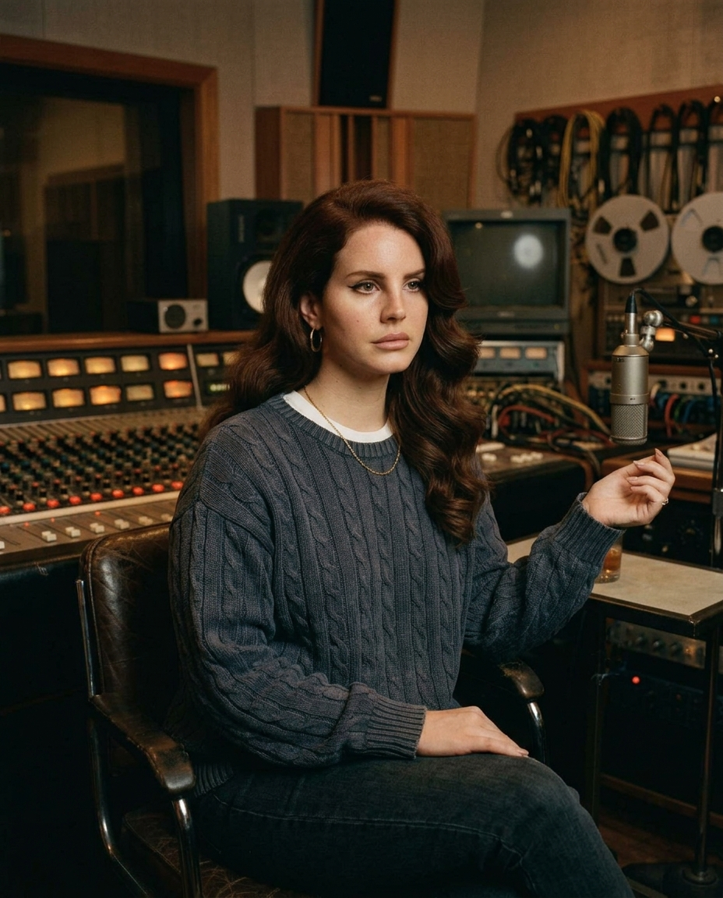

Early Life
Lana Del Rey was born Elizabeth Woolridge Grant on June 21, 1985, in New York City, and she grew up in Lake Placid, New York. She started writing songs and performing in Brooklyn clubs as a teenager, and she later studied philosophy at Fordham University. Her first releases came out under the name Lizzy Grant, including the 2008 EP Kill Kill. Not long after, she began using the stage name Lana Del Rey and created the vintage, cinematic style she is known for.
She became famous in 2011 when her self-made music video for “Video Games” went viral online. Her major-label debut album, Born to Die (2012), was an international success, and Ultraviolence (2014) reached No. 1 on the Billboard 200. Her 2019 album NFR! won wide praise from critics and was nominated for the Grammy for Album of the Year. She went on to release more acclaimed albums, including Did You Know That There's a Tunnel Under Ocean Blvd (2023), and she headlined the Coachella festival in 2024.
Career Timeline
- [2008] – [Released her first EP, Kill Kill, under the name Lizzy Grant.]
- [2012] – [Released her major-label debut album, Born to Die.]
- [2011] – [Became famous when her song “Video Games” went viral online.]
- [2013] – [Won the Brit Award for International Female Solo Artist.]
- [2023] – [Released her ninth studio album, Did You Know That There's a Tunnel Under Ocean Blvd.]
Legacy
Lana Del Rey is one of the most influential singer-songwriters of her generation, and her dreamy, nostalgic sound has inspired younger artists such as Billie Eilish and Olivia Rodrigo. Her lyrics about love, fame, and the American dream have built her a devoted fan base around the world. Along with her Brit Award, she has earned many Grammy nominations, and in 2023 Billboard named her its Women in Music Visionary. Today she keeps writing and recording new music, and in 2024 she headlined the Coachella festival.